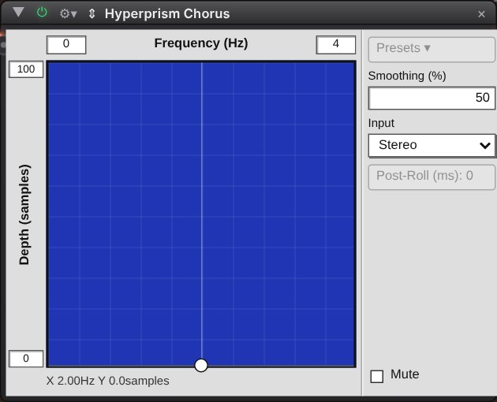

prism-fx
A hundred and one audio effects, from Hyperprism and SoundHack classics to reverbs, written once in Rust and shared by a desktop app and a browser app. You can play all of them in the rack below.
ProductAudioBuilt with AI
101effects in one catalog
2products running the same code
890+tests, including golden renders
0outside dependencies
The problem
- Two products needed the same effects: a native desktop app and a browser app running WebAssembly.
- Copying the code would let the two drift apart, and users would hear the difference.
What I did
- Wrote every effect once, in Rust, against one contract: stereo, in place, and the same output frame by frame or in blocks.
- Gave each effect a descriptor with its parameters, ranges and panel, so both apps draw the same controls from one table.
- Tested the whole catalog against the contract: block size doesn't matter, every control reaches the output, the output stays finite, and nothing allocates after setup.
- Held the effects moved out of Audio Edit & Tag to golden renders of the originals, bit for bit.
- Ported 29 Hyperprism effects, nine SoundHack processors and four Lexicon LXP reverbs.
- Kept it free of outside crates, with unsafe code forbidden.
- Built a standalone browser rack: chain any of the 101 effects over twelve built-in sounds, your own file or your microphone, with every panel drawn from the descriptors.
What changed
- Audio Edit & Tag's whole effects rack now builds from this library.
- idMLab runs the same effects and grain engine in the browser.
- A new effect lands in both products at once.
